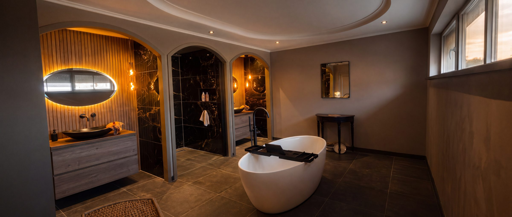
Ik ben Gerard Bartels uit Roosendaal. Sloop, installatiewerk — cv, water, elektra — plafond, stucwerk en tegelwerk: ik doe het zelf, van begin tot eind.
“Gerard werkt volgens afspraak, accuraat en netjes. Het resultaat is erg mooi.”
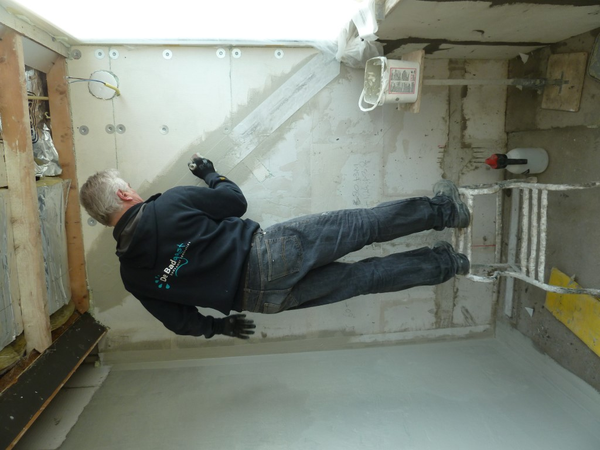
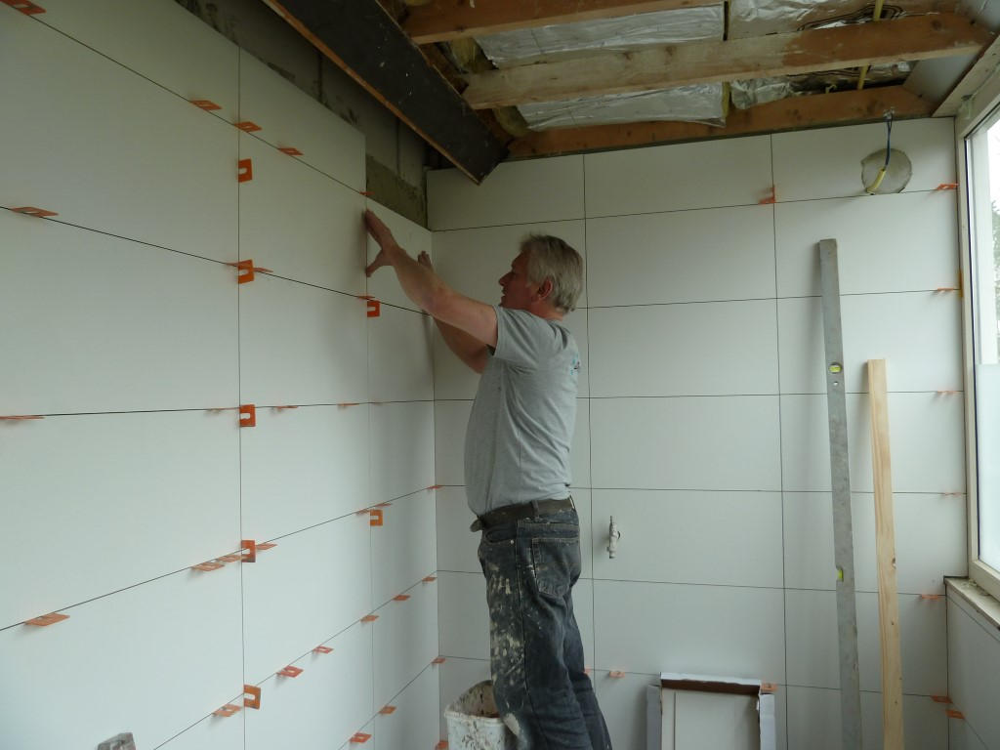
Ik ben Gerard Bartels, watertechnisch installateur van origine. Na 45 jaar in het vak en zo’n 500 badkamers weet ik: het verschil zit in de details. Daarom werk ik bewust alleen: u hebt van A tot Z met mij te maken, dus misverstanden zijn nagenoeg uitgesloten. Alles gaat in overleg. Ik lever pas op als uw badkamer of toilet precies is zoals u het voor ogen had.
Ik werk niet met een aanneemsom, maar met een wekelijkse factuur waarop alle uren en materialen staan gespecificeerd. Dat betekent dat u zelf bepaalt hoeveel u uitbesteedt. Het vakwerk doe ik, het eenvoudige werk mag u gerust zelf oppakken. Scheelt uren op de factuur, en u weet precies waar u aan toe bent.
Wilt u liever nergens naar omkijken? Dan neem ik alles uit handen. Ook prima, we spreken het samen af.
Oude tegels, meubel en sanitair eruit voordat ik begin.
Eventueel een container regelen, of het afval naar de milieustraat brengen.
Een plek vlak bij de badkamer voor gereedschap en materialen. Dek daar alles af behalve de vloer — die doe ik.
De tegels zo dicht mogelijk bij de te renoveren ruimte neerzetten.
Even grofweg schoonmaken als ik weg ben.
Van slopen tot opleveren: sleuven frezen, hak- en breekwerk waar nodig, installatiewerk voor elektra, cv, water en riolering, stucwerk, tegelwerk, montage van sanitair en kitwerk. U kiest de materialen, ik regel de uitvoering.
Alle werkzaamheden die denkbaar zijn om u het toilet van uw dromen te bezorgen: leidingen, tegelwerk tot in de hoeken, sanitair en een strakke afwerking.
Geen onderaannemers. Sloop, leidingwerk, elektra, tegels en de laatste kitrand: allemaal door mij, van eerste dag tot oplevering.
Vier stappen, één aanspreekpunt. U weet steeds wie er komt, wat er die week gebeurt en wat het tot dan toe heeft gekost.
Ik kom langs, meet op, denk mee in de mogelijkheden en geef u een eerlijke totaalindicatie.
Sanitair en tegels zoekt u uit bij een kwaliteitsshowroom: Maxaro, Jan van Zundert of Brugman.
Ik werk uw badkamer in één keer af. Looproute en trap dek ik netjes af, elke vrijdag ruim ik op.
We lopen samen alles na. Ik lever pas op als het precies is zoals u het voor ogen had.
Elke badkamer hieronder begon als een ruimte waar de eigenaar op uitgekeken was. Alles heb ik zelf gemaakt, van sloop tot de laatste kitrand.
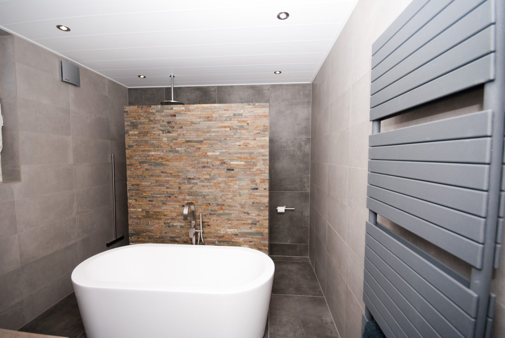
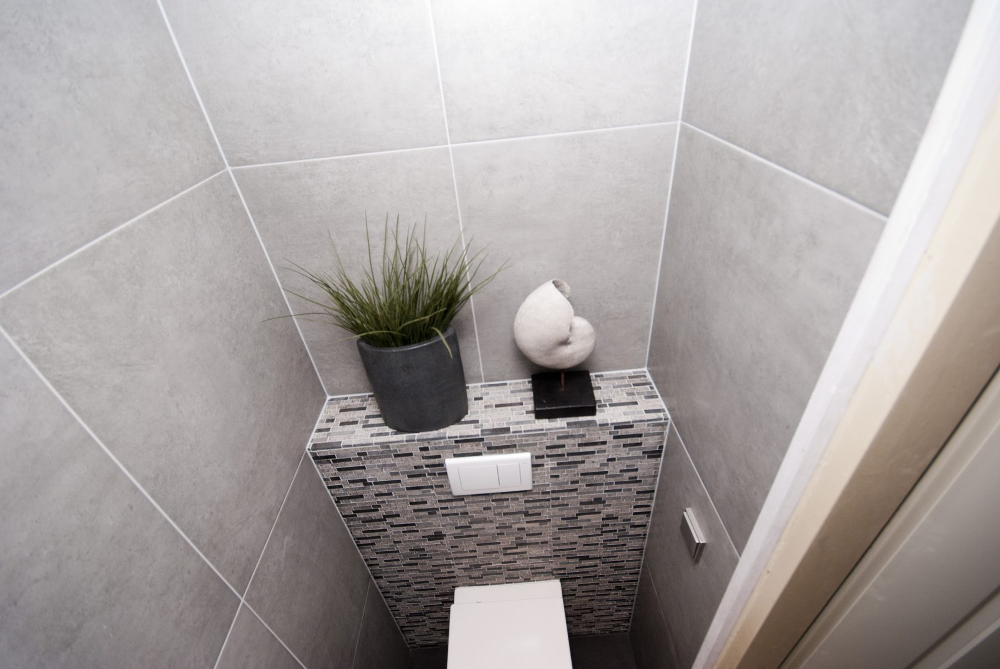
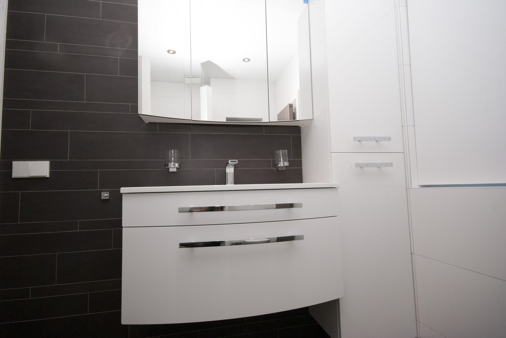
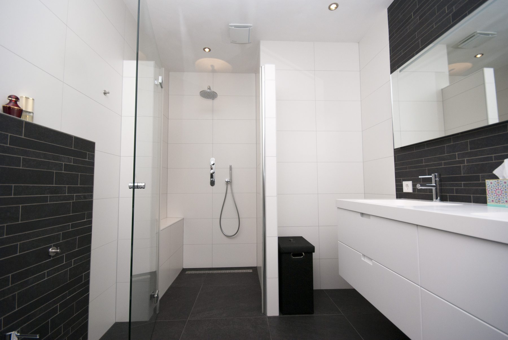
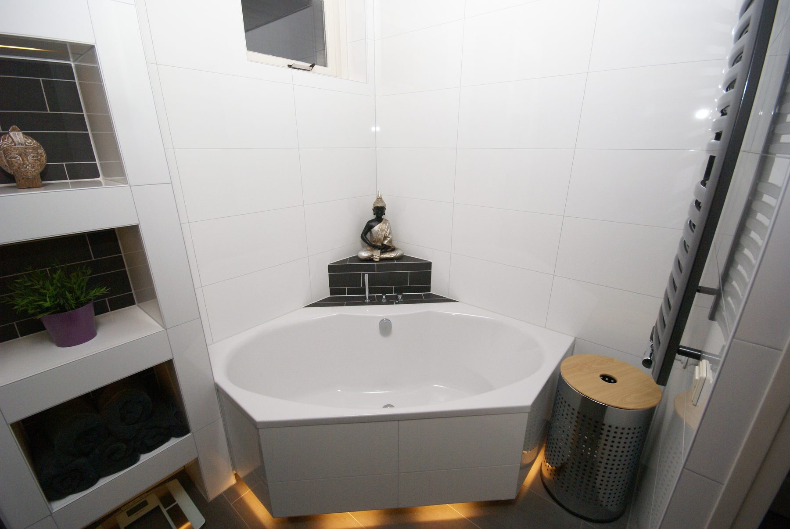
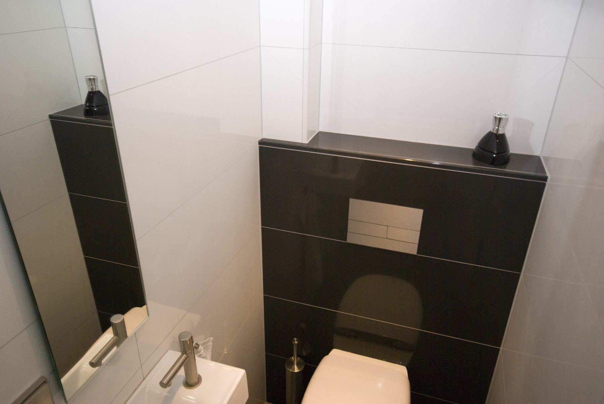
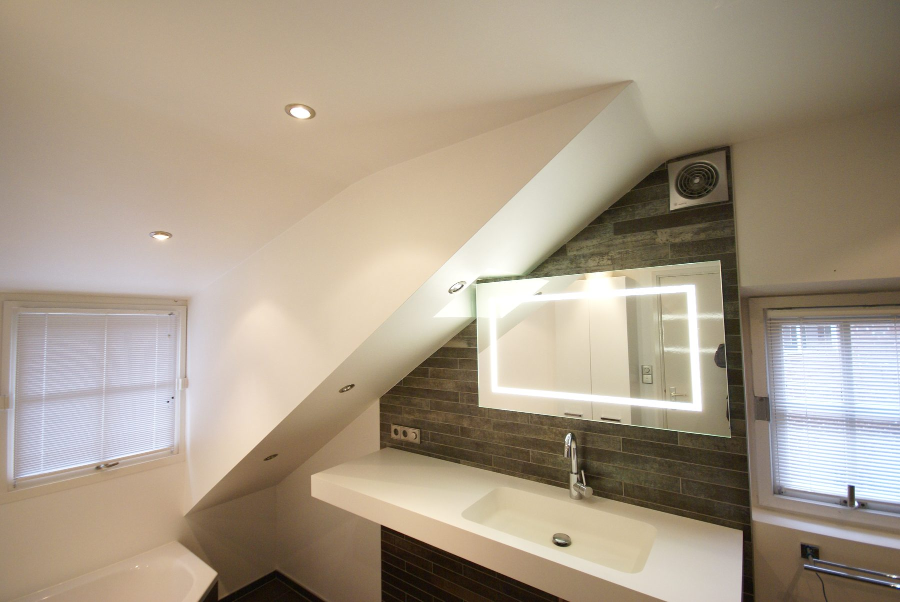
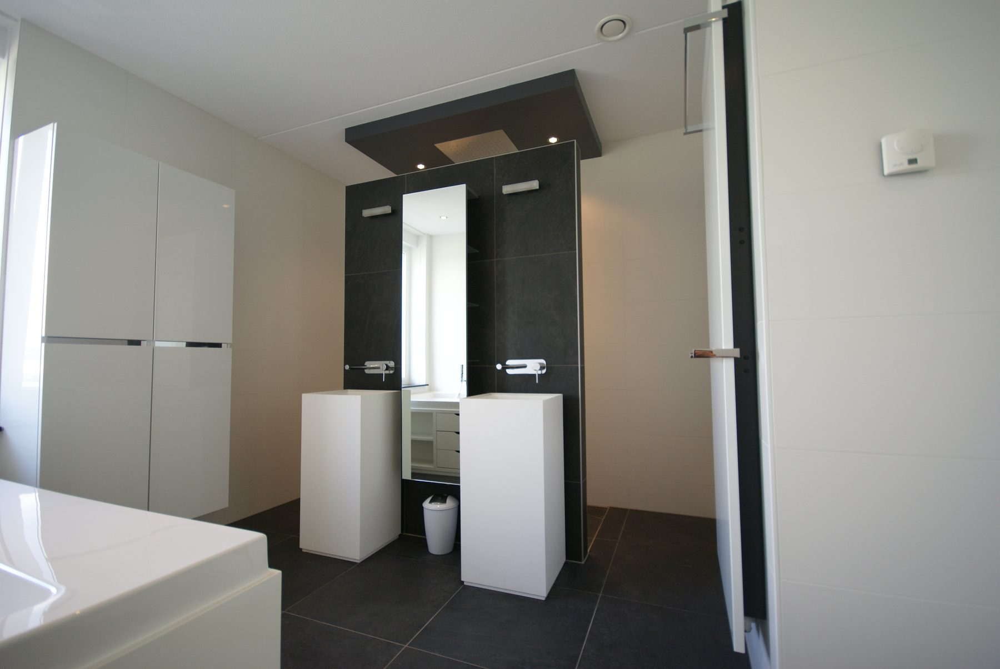

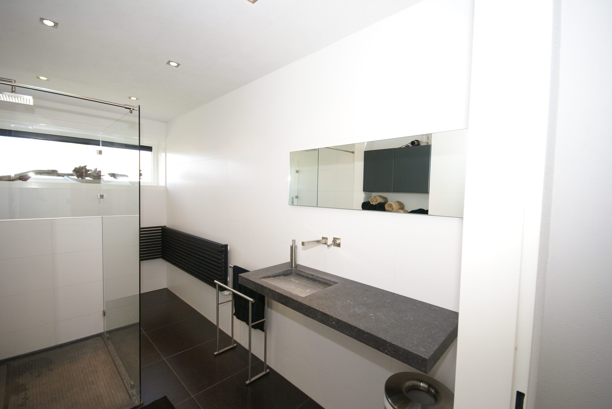
Mensen voor wie ik eerder werkte, vertellen het door aan familie, buren en collega's. Dit schreven zij zelf over mijn werk.
“Gerard werkt volgens afspraak, geeft praktische tips, werkt accuraat en netjes. Het resultaat is erg mooi!”
“Gerard heeft onze toiletruimte onder handen genomen. Heel vakkundig gedaan en daarbij goede adviezen gegeven.”
“Gerard is vriendelijk, professioneel en denkt mee. Komt met goede voorstellen en oplossingen. Het resultaat is prachtig!”
Laat uw gegevens achter en vertel kort wat uw plannen zijn. Ik neem zelf contact op om langs te komen, bekijk samen met u de mogelijkheden en geef een reële indicatie van het geheel.
Ik neem binnen twee werkdagen zelf contact met u op. Hebt u haast? Bel dan gerust: 06 - 15 95 61 78.